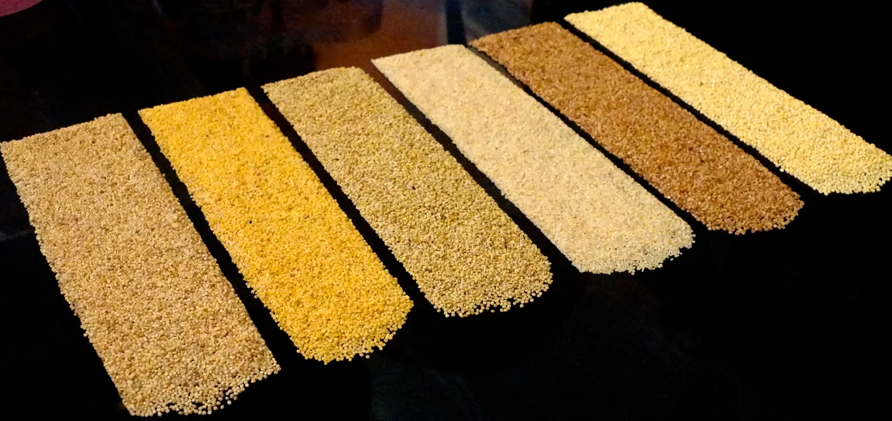

About Millets Zone
Rooted in Siridhanya.
A collection of grains, recipes, and ideas from Millets Zone. A place to learn, explore, and bring familiar foods to your table.

The golden milletsA closer look at
A closer look at
the everyday grain.
Millets Zone’s original collection centres on five Siridhanya millets: Foxtail, Browntop, Barnyard, Kodo, and Little millet.
It explores unpolished grains, cooking traditions, and ways to prepare rice, roti, idli, dosa, pongal, and more.
From the original collectionThere’s more
There’s more
to explore.
Read the original introduction, including its discussion of unpolished grains and its references to Dr. Khadar.